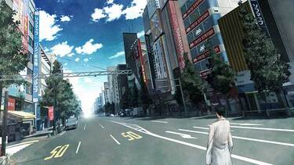
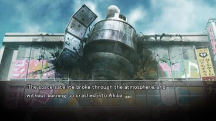

Story
Okabe Rintaro is an eccentric college student who dreams of conspiracy and chaos.
Adopting the persona of a mad scientist, he spends his time developing oddball gadgets with his friends in their
makeshift laboratory.
One day, they accidentally discover that one of their inventions can send emails into the past. In other words,
they have created a time machine.
SERN, John Titor, the IBN 5100, the Butterfly Effect, and the 11 theories of time travel, when chance brings these
elements together in Akihabara, Japan, the fate of the world hangs in the balance.
What will Okarin choose when he holds the future in his hands?
Prologue
“It's me. You're not going to believe what happened today. First, a
satellite
crashed into Radio Kaikan.
Then, thousands of people vanished from the streets of Akiba.
Finally, Makise Kurisu came back to life just three hours after I found her dead.
I know this doesn't
make sense, but it's all true!”

Across the world lines
“It all went to hell because of me, but I have a time machine. I can set things right.
I can bring her back.
So resolved, I set out to change the past, only to find that failure awaits me at every
turn. No matter what I do, the result is always the same, as if the universe itself wants
it to
happen.”
There has to be a way, i believe that.
The protagonist performs innumerable jumps in time to undo the d-mails that he sent
to the past that caused great changes in the future, one of them...The third world war!
